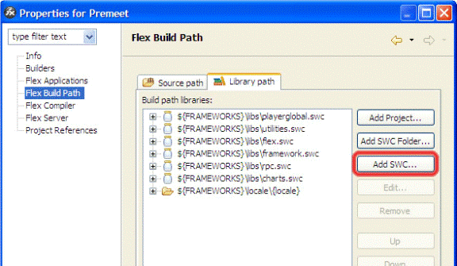

Flash Player 7, 8, 9+.
The Carousel component is a version 2 and 3 Flash component that allows you to display an array of images in carousel view format round a virtual circular space. The component makes it easy to implement carousel gallery view in Flash or Flex applications by simple drag and drop. With a great bias on flexibility, the component has been designed to give the designer a pool of properties and methods to customise the look and view of your image gallery.
The Carousel component comes in 3 different flavours categorized by the development environment which include to wit:
1. Flash Actionscript 2.0 version (Flash 7 & 8)
2. Flash Actionscript 3.0 version (Flash CS3)
3. Flex Version (Flex Builder 2.0+)
1. Dynamically load images: The component gives designers and developers the flexibility of loading images dynamically through xml. The generated xml also carries the image description.
2. Full Customization: With a variety of properties, you can customize the component to the look and feel that suits your interface so the component doesnt look odd. You can customize the borders, border color, border gap, reflection, depth and others. Please check out the documentation for a full list of the properties and methods that you can access or modify.
3. Image Titling: Your xml can optionally carry image title or little description that will be displayed below each corresponding image. The title view can as well be customized. You can set the title font face, color and size.
4. Reflection: The component can optionally display a reflection of your original image thereby giving an appeal that holds today. The reflection can optionally be customized as well. Please note that the reflection effect is only available in Flash CS3 and Flex versions.
5. Scroll Sound: You can optionally load and set the component to play a short sound of your choice when an image placement is changed.
6. Auto Run: You can set the component to automatically scroll the images within a specified number of seconds. Automatically playing the images does not hinder individual image click. You can also dynamically pause or resume the auto play by calling the play() or pause() methods of the component instance.
7. Mouse Scroll Wheel: Users can interact with the component using their mouse scroll wheel.
8. Events: The component broacasts events that can be listened to to interact with other components or classes within your application.
The component comes in an installable mxp archive for Flash IDE installation and as an swc package for Flex integration. You need to install the component by running the mxp file and it will automatically install or use the Adobe extension manager to install it. Once you have installed, it will appear in your Components library under Synergic Labs. To view your library, press Ctrl+L. Also, the Flash mxp version comes with the pre-installed help file integrated into the Flash Help file system. Hit F1 in your Flash IDE to open your help panel. There, select "All Books" from the drop down and you'll find "Carousel" as one of the topics. Also, you will be prompted to create and select a folder where you wish to store your sample files. Please remember to refer to this folder later on for the sample files.
For Flex installation, copy an instance of the Carousel.swc component into a folder within your application or even outside but put in mind the location because you will reference it later in your application.
Usage
Flash IDE:
To use the component in your flash application, open the library panel and you'll locate Synergic Labs in the list after installation. Drop down that node and you'll find Carousel there. Next, Drag the component unto your application stage and set the properties as appropriate. Please refer to the properties and methods list below for a complete documentation of all the parameters you need to set and how to access the methods and events within the component.
Flex Builder IDE:
To use the Flex version of the component, simply add the SWC to your project's library path as follows:
1. With your project selected in the navigator view, select Project > Properties > Flex Build Path.
2. Select the "Library Path" tab.
3. Select add SWC to add the Carousel component.
4. Browse to the location of the swc file...

5. Click Ok and thats all.
From your Flex Builder IDE, you can Drag and Drop the component from the customs component view unto your canvas and through the mxml or actionscript set the component properties. You need to switch to the view state to see the Customs components.
Alternatively if you are using a 3rd party application like the Flash Develop application, simply add the swc reference to your project and in your actionscript, write the import statement: import Flexcubed.Carousel and you can reference the class from there. There is also a Flash Develop sample in the samples package.
The installation comes with asample file detailing application examples of Carousel and a sample xml file with all the required xml nodes.
|
Properties |
|---|
| borderPadding |
| reflectionDistance |
| showReflection |
| titleSize |
| fadeImages |
| depth |
| xRadius |
| showBorder |
| color |
| titleColor |
| borderColor |
| titleFont |
| showTitle |
| fileName |
| changeSound |
| autoRun |
|
Methods |
|---|
| draw() |
| getTotalImages() |
| selectedImage() |
| pause() |
| play() |
| setCurrentImage() |
|
Events |
|---|
| xmlFileLoaded |
| imageClicked |
| initialize |
Authors:
Synergic Laboratories
| Next >> |
||